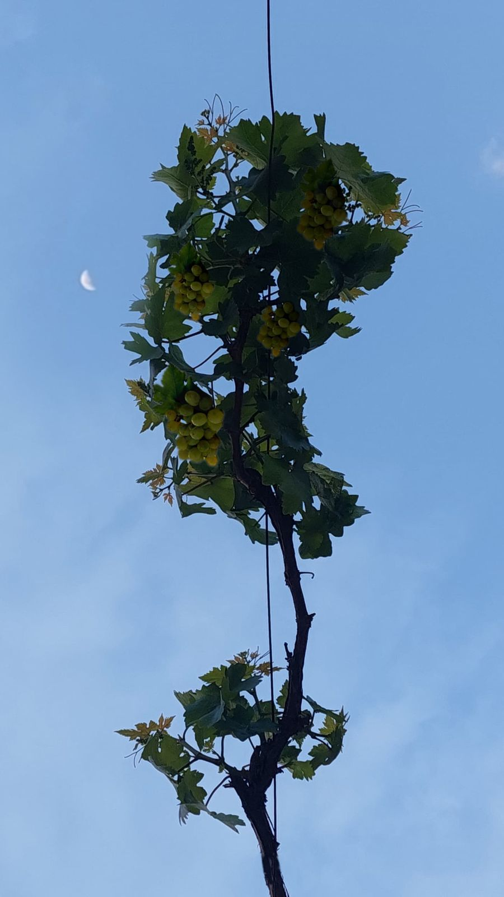

To the west of Homs, Syria, my friend’s father’s car swerved onto a dusty road leading to the top of a purely green hill; unified in color, just like the sky over it. I was visiting my friend, Kamal, in a village called al Hawash where, in August 2021, originality and the natural sounds weren’t the only impressive aspects if it. What amazed me just as much was how the habitants of that village had grasped and learned originality from nature, in their jokes, their daily dialogues, and their handcrafted Arak.
Kamal’s mom saw us and immediately came to greet us “Welcome, welcome, take off the shoes and go wash your feet”. I paused, why did we need to wash our feet? On our way to the place where we wash our feet, I saw huge bowls. Hand in hand with all the kids from the village, we stood inside of the huge bowls and on the grapes. We started jumping and stomping on the grapes as hard and fast as we could while getting hyped up by Arabic pop songs. Grapes were turned into pulp. Afterwards, we gathered around a fire to distill the extracted juice and enjoy some tasty grilled corn to celebrate our accomplishment.
The laughter I experienced that summer while making Arak, a Levantine anise-flavored drink, was unforgettable. It was a process full of collaboration, gossip, bonding, and heritage. Making Arak teaches you that the real richness lies not just in the drink, but in the experience and everything you pick up along the way: stomping on grapes with all your force teaches you hard work, holding hands with your neighbors teaches you the value of human support, and grilling food afterward reminds you of the importance of slowing down and taking a break.
As I talked with more friends about my unique experience, I was fortunate enough to meet Leen who is from Sadad, Homs and whose family specializes in Arak making in Homs. To learn about a secret ingredient of Arak, listen to the interview attached.
Fresh grapes-the main ingredient of Arak
A traditional Karakeh—a handmade distillation machine—used to boil down the stomped grapes. Fire below, culture above.
The Jarasheh, an industrial machine that took over the work once done by barefoot kids stomping on grapes. Its name means "grinder," but it also quietly marks the shift from tradition to technology.
Grilling Kibbeh after a full day of family teamwork on Arak. It's both the reward and the celebration, shared warmth at the end of shared labor.
Arak, freshly poured and saved in bottles, transparent, just before water transforms it into its signature milky white through a natural chemical reaction.